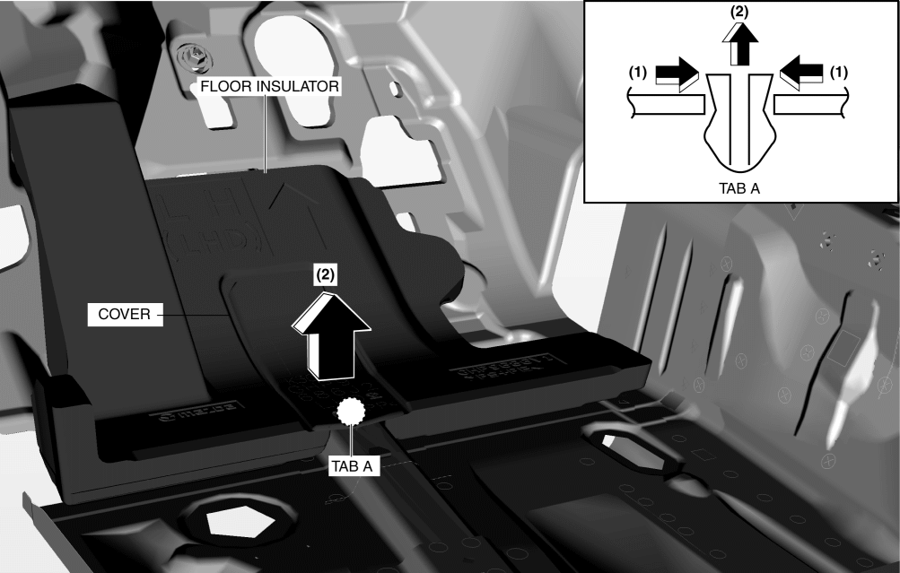
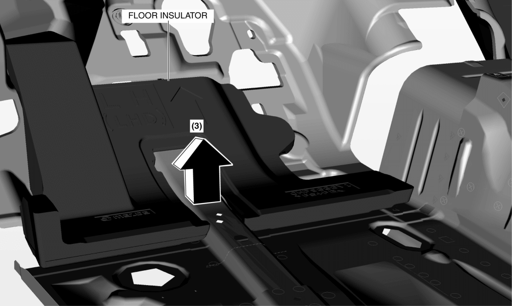
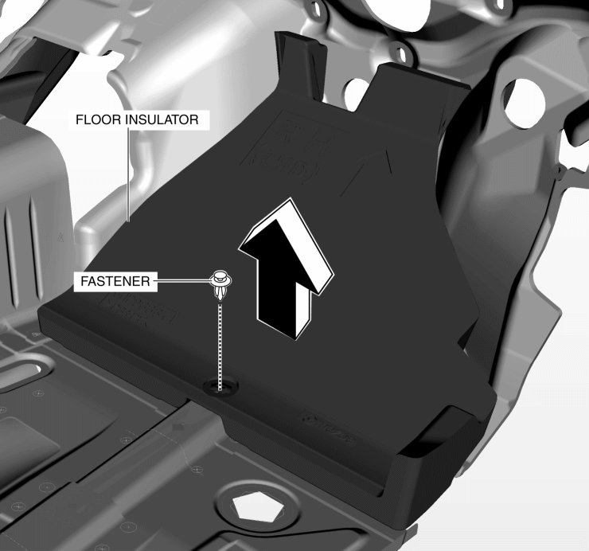

< Previous
Next >
2014 -
Mazda6 -
Body and Accessories
FLOOR INSULATOR REMOVAL/INSTALLATION
Driver-side
1. Disconnect the negative battery cable. (See NEGATIVE BATTERY CABLE DISCONNECTION/CONNECTION [SKYACTIV-G 2.5].)
2. Remove the following parts: a. Driver-side front scuff plate (See FRONT SCUFF PLATE REMOVAL/INSTALLATION.)
b. Driver-side front side trim (See FRONT SIDE TRIM REMOVAL/INSTALLATION.)
c. Upper panel (See UPPER PANEL REMOVAL/INSTALLATION.)
d. Shift lever knob (MTX) (See MANUAL TRANSAXLE SHIFT MECHANISM REMOVAL/INSTALLATION [C66M-R].)
e. Selector lever knob (ATX) (See AUTOMATIC TRANSAXLE SHIFT MECHANISM REMOVAL/INSTALLATION.)
f. Shift panel (See SHIFT PANEL REMOVAL/INSTALLATION.)
g. Rear console (See REAR CONSOLE REMOVAL/INSTALLATION.)
h. Front console box (See FRONT CONSOLE BOX REMOVAL/INSTALLATION.)
i. Side wall (See SIDE WALL REMOVAL/INSTALLATION.)
j. Front console (See FRONT CONSOLE REMOVAL/INSTALLATION.)
k. Accelerator pedal (See ACCELERATOR PEDAL REMOVAL/INSTALLATION [SKYACTIV-G 2.5].)
l. Joint cover (See STEERING WHEEL AND COLUMN REMOVAL/INSTALLATION.)
3. Partially peel back the floor covering.
4. Remove the tab A in the direction of the arrow (1) shown in the figure.

5. Remove the cover in the direction of the arrow (2) shown in the figure.
6. Pull the floor insulator in the direction of the arrow (3) and remove it.

7. Install in the reverse order of removal.
Passenger-side
1. Disconnect the negative battery cable. (See NEGATIVE BATTERY CABLE DISCONNECTION/CONNECTION [SKYACTIV-G 2.5].)
2. Remove the following parts: a. Passenger-side front scuff plate (See FRONT SCUFF PLATE REMOVAL/INSTALLATION.)
b. Passenger-side side trim (See FRONT SIDE TRIM REMOVAL/INSTALLATION.)
c. Upper panel (See UPPER PANEL REMOVAL/INSTALLATION.)
d. Shift lever knob (MTX) (See MANUAL TRANSAXLE SHIFT MECHANISM REMOVAL/INSTALLATION [C66M-R].)
e. Selector lever knob (ATX) (See AUTOMATIC TRANSAXLE SHIFT MECHANISM REMOVAL/INSTALLATION.)
f. Shift panel (See SHIFT PANEL REMOVAL/INSTALLATION.)
g. Rear console (See REAR CONSOLE REMOVAL/INSTALLATION.)
h. Front console box (See FRONT CONSOLE BOX REMOVAL/INSTALLATION.)
i. Side wall (See SIDE WALL REMOVAL/INSTALLATION.)
j. Front console (See FRONT CONSOLE REMOVAL/INSTALLATION.)
3. Partially peel back the floor covering.
4. Remove the fastener.

5. Pull the floor insulator in the direction of the arrow and remove it.
6. Install in the reverse order of removal.
< Previous
Next >
© 2012 Mazda North American Operations, U.S.A.